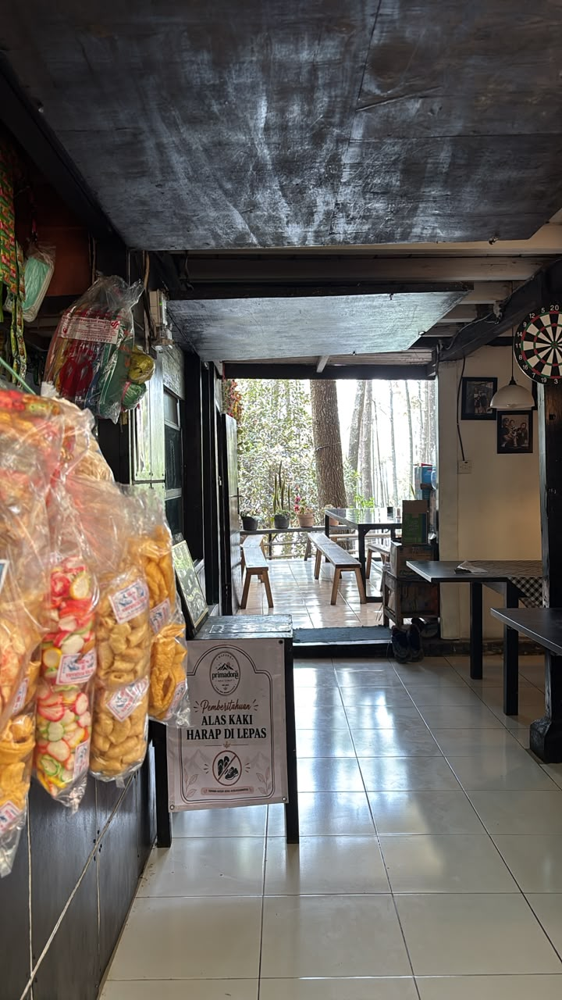
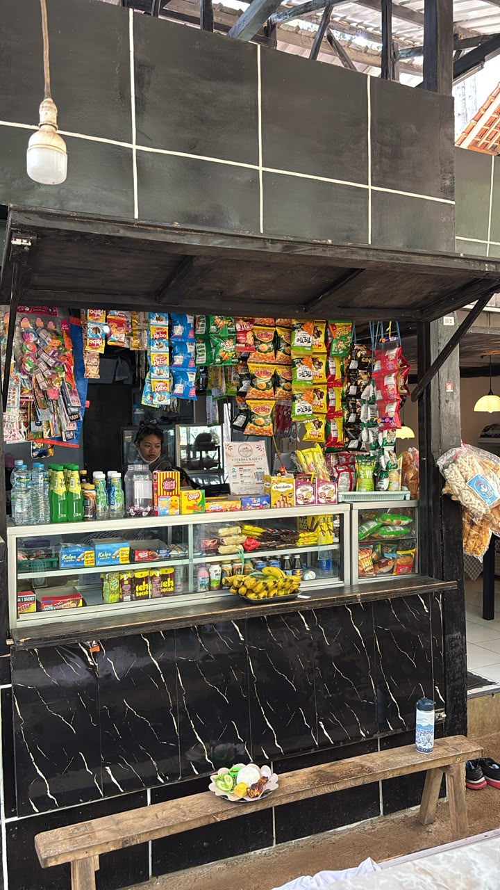
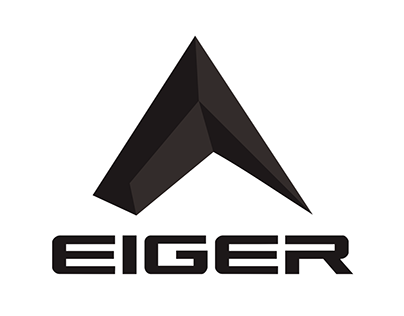

PORTfolio
Kolektor 25+ Podium Kejuaraan Trail Run Nasional (termasuk Juara 1 BDG 100 70K, UGM Trail 50K, Merbabu Sky Race, & Dieng Caldera).
.PNG) BDG 100 (70K) • 1ST
BDG 100 (70K) • 1ST
.PNG) MERBABU SKY • 1ST
MERBABU SKY • 1ST
.PNG) UGM 50K • 1ST
UGM 50K • 1ST
.PNG)
.PNG)
About ME
Saya Abdul Rohman, pemuda berusia 20 tahun asal Jawa Barat dan atlet EIGER Trail Squad yang bertumbuh dari kawah candradimuka Manglayang Academia. Di arena lari lintas alam yang kerap didominasi pelari veteran, saya membuktikan bahwa usia belia mampu mendobrak kancah elite nasional.
Lahir dari keluarga pedagang sederhana, titik balik saya bermula di Manglayang Everesting Challenge 2025 ketika harus meminjam uang pendaftaran dari ibu—lalu berhasil meraih Juara 2 dan menyerahkan seluruh hadiah kembali ke pangkuan beliau. Dedikasi tersebut berbuah rekor bersejarah saat menjuarai BDG100 Ultra 70K dengan waktu tercepat 08:13:40 (+3.490m elevasi), unggul hampir satu jam dari pelari internasional.
Bagi saya, setiap langkah di lintasan ekstrem bukan sekadar mengejar podium, melainkan wujud cinta pada sang ibunda, integritas doa orang tua, serta sarana menghadirkan kampanye Digital Marketing & UGC autentik bagi masa depan olahraga alam bebas Indonesia.
WARUNG TEH ROS
Basecamp Fuel & Carbo Loading • Gn. ManglayangBagi atlet trail run dan pegiat alam yang sering melibas rute teknis Gunung Manglayang, Warung Mak Ros (Teh Ros) adalah tempat singgah wajib untuk mengisi kembali energi yang terkuras. Warung ini menghadirkan konsep serba ada: mulai dari aneka jajanan ringan, minuman hangat/dingin, hingga santapan makanan berat yang mengenyangkan.
Dengan harga makanan yang sangat bersahabat di kisaran Rp15.000-an, porsi melimpah, dan cita rasa rumahan yang nikmat, warung ini menjadi titik kumpul favorit komunitas. Dari sudut pandang Digital Marketing, Warung Mak Ros sukses memanfaatkan potensi Niche Community Hub dan Organic Word-of-Mouth (WOM) di kalangan pelari gunung serta pendaki, menjadikannya destinasi yang selalu direkomendasikan secara organik di media sosial.
- + WARUNG SERBA ADA: JAJANAN & MAKANAN LENGKAP
- + HARGA MAKANAN TERJANGKAU KISARAN RP15.000

Warung Teh Ros
Menu Rp15k-anFOOTBALL Snapshot
Di luar lintasan ekstrem trail running, Abdul Rohman menyalurkan energi dan menjaga ketajaman refleks melalui hobi Sepak Bola. Bagi Abdul, sepak bola bukan sekadar olahraga fisik pengisi waktu luang, melainkan sarana melatih kelincahan langkah, pengambilan keputusan kilat di bawah tekanan, serta soliditas komunikasi tim—fondasi mentalitas yang secara langsung memperkuat daya juangnya di panggung kejuaraan lari gunung.
.PNG) On the Pitch
On the Pitch
.PNG) Teamwork & Chemistry
Teamwork & Chemistry
.PNG) Agility & Reflex
Agility & Reflex
.PNG) Tactical Pace
FOOTBALL PASSION
Tactical Pace
FOOTBALL PASSION
.PNG) High Stamina
High Stamina
OFFICIAL Partners
Dipercaya sebagai Brand Ambassador resmi untuk brand outdoor terkemuka dan teknologi sports smartwatch dunia. Menguji durabilitas gear di medan ekstrem 25+ podium kejuaraan nasional.

Apparel teknis, hydration vest, trail shoes, dan perlengkapan ultra endurance penunjang juara 1 nasional.
GPS tracking presisi, pemetaan rute GPX, monitoring VO2Max, dan metrik elevasi penakluk lintasan 70K.
TOP
PERFORMING
athlete
STARTS
HERE
SKILL & Expertise
Kombinasi unik antara Ketahanan Fisik Atletik (spesialisasi ultra trail run & navigasi telemetri) dengan Keahlian Teknologi Informasi (analisis kebutuhan sistem & perancangan antarmuka UI/UX).
 98%
98%
 95%
95%
 92%
92%
 94%
94%
CHAMPIONSHIP Hall of Fame
Rekam jejak resmi 25 podium kejuaraan Trail Run yang diraih Abdul Rohman di berbagai gunung dan lintasan ekstrem Indonesia.
.PNG) 🔍 LIHAT FOTO
🔍 LIHAT FOTO
BDG 100 Ultra (70K)
Rekor Tercepat 08:13:40 • Sri Ajnyana Ultra Trail 2026
.PNG) 🔍 LIHAT FOTO
🔍 LIHAT FOTO
VOTCHA 2026 (45K)
Juara 1 Overall Tangkuban Parahu • Waktu 05:00:11
.PNG) 🔍 LIHAT FOTO
🔍 LIHAT FOTO
BFR Slamet Ultra (50K)
Juara 1 Overall & Category • Waktu 08:41:54 (ALTI)
.PNG) 🔍 LIHAT FOTO
🔍 LIHAT FOTO
UGM Trail Run (50K)
Finisher 50K • Catatan Waktu Tajam 05:06:58
 Face Wash
Face Wash
 Fresh EDT
Fresh EDT
KAHF GROOMING
ParagonCorp • Runner's Personal CareBerlari puluhan kilometer di bawah terik matahari dan debu vulkanik gunung menuntut perawatan wajah ekstra. Saya mengulas Kahf Face Wash & Eau de Toilette dengan formula HydroBalance yang selalu ada di dropbag lomba saya.
Dari sisi Digital Marketing, Kahf sangat tajam mengeksekusi Targeted Positioning untuk pria aktif lewat kampanye petualangan, iklan SEM/PPC Marketplace, serta aktivasi komunitas lari.
- + STRONG OUTDOOR BRAND POSITIONING
- + TOP RANKING MARKETPLACE SEM & PPC
- + HIGH AFFILIATE & CART RECOVERY RATE
- + ACTIVE RUNNING EVENT SPONSORSHIP